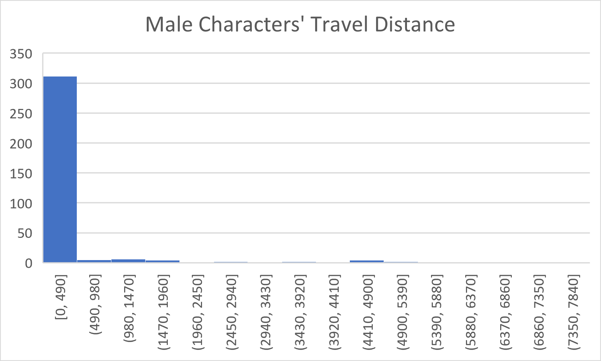
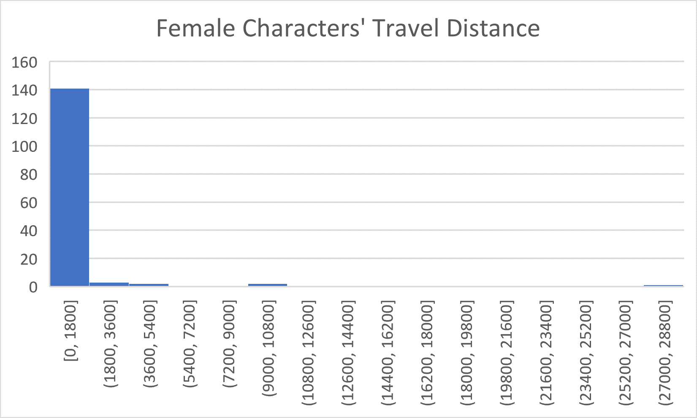
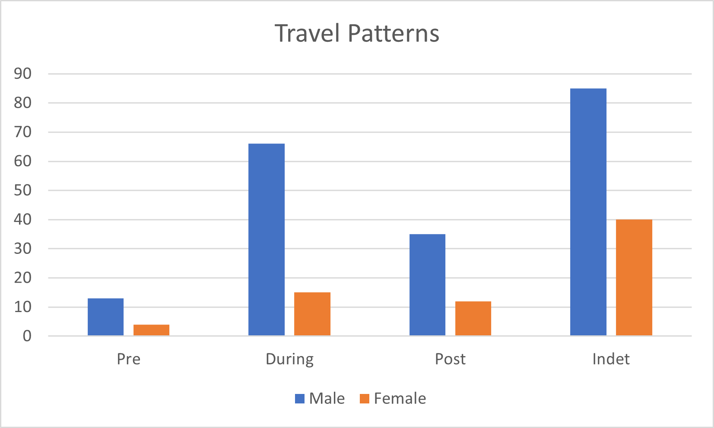

Slide through the periods to see what locations are written about.
After three hundred years of subjugation under the British rule, the subcontinent partitioned into two new nations: Hindu-majority India and Muslim-majority Pakistan. Uprooting the lives of millions, it was labelled the largest refugee crisis in history. It is no wonder that in the vast corpus of partition literature we've encountered so far, travel features in some form or the other.
We've seen characters abandon homes, navigate dangerous paths, cross borders all while forging a completely new future. In this project, we attempt to examine these travel patterns through a gendered lens. We hypothesised that on an average, men travelled more than women. Given the grim conditions, it seems intuitive that women's increased susceptibility to violence would hinder them from travelling unless out of absolute necessity.
However, the resulting map proved our hypothesis wrong. Women had travelled a greater average distance than men.
 On examining the data, we theorised that this could be because the text contains more male characters, out of whom a majority were simply throw-away characters - bystanders, survivors or perpetrators of violence - often appearing in a single location. When the narrative focused on a female character, they were more likely to be "important" i.e. someone whose journey was worth noting.
We attempt to carry forward this analysis by also adding a temporal aspect. The corpus is classified into five large time periods. We examine the character paths according to these time zones, segregated by gender. Based on our findings from the previous project, our hypothesis is now this: We will see both genders travelling during the Partition, but fewer women travelling in the Pre- and Post-Partition periods.
The trajectories of both men and women are visible, with women in green and men in purple. The toggle allows viewers to switch between the male paths and the female paths. By visually scanning the map, we observed some places were more travelled than others. For instance there is a particularly dense set of paths going across the border near Amritsar and Lahore. Only thirty-two miles separate, the cities that once were part of the same state grew worlds apart. This could be a reflection of how our corpus featured myriad accounts of actual border crossings.
While the number of journeys made by men and women alike would be high during partition, would instances of women travelling post-partition decline?
Our new hypothesis now dealt with the travel patterns of men and women depending on time period. We hypothesise that while both genders travelled extensively during the partition, any travel Pre- or Post-Partition was undertaken primarily by men.
Here, we attempt to spot any patterns through the lens of temporality. The slider allows you to toggle between the following 5 temporal categories:
We also added a sixth option, which shows all the paths that have not been temporally coded in the database.
Upon switching through, we can see that in the datapoints we do have, men have travelled more in the Pre Partition and Post Partition periods. What is also transparent is that most paths have not been temporally coded, which severely skews any analysis we can make from this map.
Note: the temporality you set in this section will apply to what you see when you scroll to other sections.
An unfortunate drawback in our database was the absence of temporality data. However, we cross-checked with the data on QGIS, and a majority of the female paths crossing the border occurred during the partition. There are quite a few female paths in the Indeterminable section, which seem to be from the work A Life Long Ago, which is set largely in the 1950s, and as such, is the only work that majorly features women travelling post-partition. The other prominent travel paths are the long ones from India to the UK, one female and one male, which come from Sunlight on a Broken Column. The notable travel here comes from Zahra, the protagonist's cousin, who travels to Britain. The novel is partly autobiographical, and Attia Hossain had moved to Britain at the time of publishing this novel, so this might be a reflection of that. This is in contrast to protagonist Laila, who stubbornly chooses to stay in India, and not move away. Apart from these exceptions, we observe that while during Partition, there was extensive travel for both genders, in the Pre- and Post-Partition periods, it was primarily men travelling.
A possible reason for this follows from the analysis we did about the travel patterns of women in general. There were rarely any throwaway women characters, and in stories set during the partition, most women who were present ended up travelling. However, once the Partition was done, more women tended to stick to one place. Despite the fact that women travelled a greater average distance, it seems to be concentrated to a single time period.
In conclusion, we can tentatively say that what we have shown here is in support of our hypothesis with respect to the travel patterns of males and females through time, with respect to the events of the Partition.
However, one cannot make a concrete conclusion based on what we have seen here, since the data available to us is a very small subset of the whole database. Moving forward, we can make the effort to track more temporal information on the main database.
It is to be noted that our results are also very much a function of the kind of texts that make up our corpus. We had a fairly even split of male and female authors. As we saw, there were quite a few notable female characters who undertook long journeys. It is interesting that our major intuitive hypothesis about women travelling less than men was proven wrong.
However, we seem to be correct about the time periods in which they have travelled. Apart from the main cast of Sunlight on a Broken Column and A Life Long Ago (whose travel is notable because they are main characters), we rarely saw women undertaking long journeys.
The Partition was not just a spatial phenomenon. It is important to place the events of the Partition in the context of time to understand not just what people's experiences looked like leading up to the partition itself, but more importantly, its lasting impacts on accessibility of space to different people.